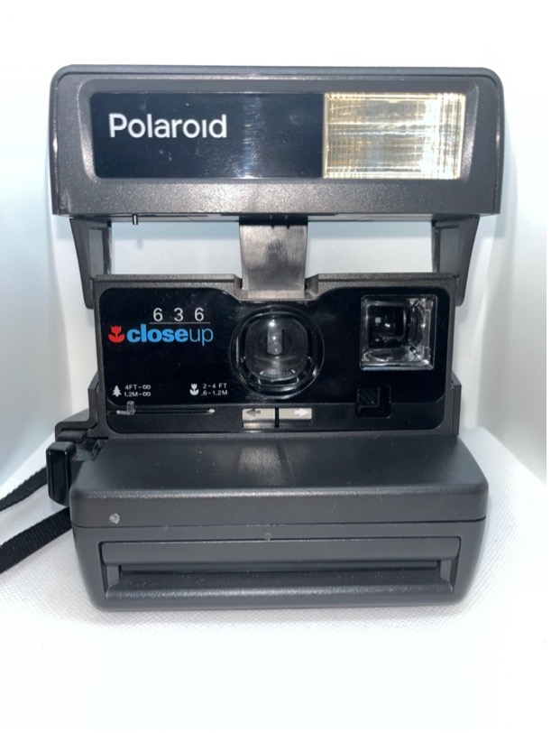

600
Polaroid 645 SuperColor

Rok výroby: 80.léta
Rozsah zaostření: 1,2m – nekonečno
Objektiv: 116mm f/11
Typ filmu: 600
Další funkce: blesk, korekce expozice
Stav: 9/10
Funkčnost: Ano
Kupní cena: 500 kč
Poznámka: Můj první polaroid.
Polaroid 636 CloseUp

Rok výroby: 1996
Rozsah zaostření: 0,6m – nekonečno
Objektiv: 116mm f/11
Typ filmu: 600
Další funkce: blesk, korekce expozice, close-up předsádka
Stav: 9/10
Funkčnost: ?
Kupní cena: 500 kč
Poznámka:
Polaroid 600 OneStep

Rok výroby: 1983
Rozsah zaostření: 0,6m – nekonečno
Objektiv: 116mm f/11
Typ filmu: 600
Další funkce: blesk, korekce expozice, close-up předsádka
Stav: 4/10
Funkčnost: ?
Kupní cena: 220 kč
Poznámka: Má upadlé poutko na ruku.
Limitované edice
Polaroid 600 Spice Cam

Rok výroby: 1997
Rozsah zaostření: 0,6m – nekonečno
Objektiv: 116mm f/11
Typ filmu: 600
Další funkce: blesk, korekce expozice, close-up předsádka
Stav: 4/10
Funkčnost: ?
Kupní cena: 569 kč
Poznámka: Má upadlé poutko na ruku.